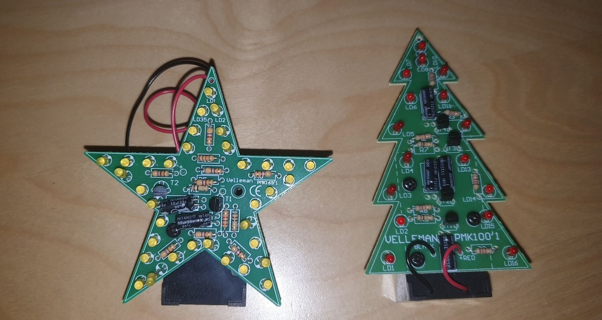

Floris Puts
Mijn naam is Floris Puts en dit is mijn web portfolio.
Ik ben 19 jaar oud en woon in Koningsbosch.
Op deze pagina kun je vanalles vinden wat ik heb gemaakt.
Sommige projecten zijn ook van mijn vorige studie geweest waar ik ook een beetje heb moeten coderen.
Ik heb elektro onderhouds monteur niv 4 gedaan en geslaagd.
Voor die school zat ik op kader in de techniek richting. daar ben ik cumlaude geslaagd.
Ik hoop dat je geïnspireerd raakt en interessant vind.
Ik zeg scrol er maar eens door heen.
Arduino
Bij dit project moesten we eerst een elektro schema tekenen.
Daarna met een software tooltje na maken en kijken of alles werkte.
Wanneer het werkte kregen we de onderdelen en konden alles solderen.
Het plaatje waar je het op hebt gemaakt zo compact mogelijk maken.
Daarna de arduino aansluiten op je creatie en uit testen met de code's.
Je kon zelf op google ook zoeken voor arduino code's en ik had me een mario zoomer code gevoden.
Die er op gezet en kijken of hij het deed.
Ik heb geen arduino en de code ook niet meer. Alleen het plaatje waar alles op zat.
.png)
C# code
Dit was een toets wat we moesten maken in C#
De toets ging over lists en enums.
We moesten een lijst aanmaken met 3 getallen. Als het getal 3 voorkomt moet de console true schrijven.
Daarna moest je nog een list maken maar je kreeg input wat in die list moest komen.
Daarna 2 lists bij elkaar gooien en 2 random items weg gooien. daarna alles er uit gooien en op het laatst de hele list weg
We hebben ook bij de 2de opdracht enums gebruikt en moesten een menu maken en de consloe vraagt wat voor mood je hebt.
Je vult de mood in die je kan kiezen. daarna berekent hij alles wat erbij en eraf moet worden geteld.
